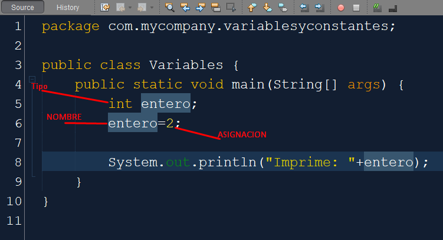
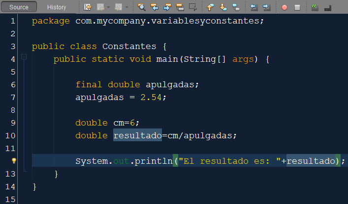

Variables de Java

Las variables son contenedores para almacenar valores de datos.
En Java, existen diferentes tipos de variables, por ejemplo:
STRING - almacena texto, como "Hola". Los valores de cadena son rodeado
de comillas
dobles
INT - almacena enteros (números enteros), sin decimales, como 123 o
-123
FLOAT - almacena números de punto flotante, con decimales, como 19,99 o
-19,99
CHAR - almacena caracteres individuales, como 'a o B'. Los valores de
caracteres
están rodeados
por comillas simples
BOOLEAN - almacena valores con dos estados: true o false
Declaración de variables
Para crear una variable, debe especificar el tipo y asignarle un valor:
Donde tipo es uno de los tipos de Java (como into String), y variableName es el nombre de la variable
(como x o nombre ). El signo igual se utiliza para asignar valores a la variable.
Para crear una variable que debería almacenar texto, observe el siguiente ejemplo:
String name = "Jose";
System.out.println(name);
Para crear una variable que debería almacenar un número, observe el siguiente ejemplo:
int myNum = 15;
System.out.println(myNum);
Nombres de las variables
Cuando vayamos a dar un nombre a una variable deberemos de tener en cuenta una serie de normas. Es
decir,
no podemos poner el nombre que nos dé la gana a una variable.
Los identificadores son secuencias de texto unicode, sensibles a mayúsculas cuya primer carácter solo
puede ser una letra, número, símbolo dolar $ o subrayado _ . Si bien es verdad que el símbolo dolar
no
es utilizado por convención.
Es recomendable que los nombres de los identificadores sean legibles y no acrónimos que no podamos
leer.
De tal manera que a la hora de verlos se auto-documenten por sí mismos. Además estos identificadores
nunca podrán coincidir con las palabras reservadas.
Algunas reglas no escritas, pero que se han asumido por convención son:
- Los identificadores siempre se escriben en minúsculas. (pe. nombre). Y si son dos o más
palabras, el
inicio de cada siguiente palabra se escriba en mayúsculas (pe. nombrePersona)
- Si el identificador implica que sea una constante. Es decir que hayamos utilizado los
modificadores
final static, dicho nombre se suele escribir en mayúsculas (pe. LETRA). Y si la constante está
compuesta de dos palabras, estas se separan con un subrayado (pe. LETRA_PI).
Declaración y uso de constantes en Java

En la sección anterior hablamos sobre variables y tipos en java y aprendimos cómo se declara una
variable, cómo se le asigna un tipo de dato específico (primitivo o complejo). En esta sección
hablaremos ya no tanto de "variables" sino más bien de constantes. Una constante desde el punto de
vista
de la programación es un dato cuyo valor no cambia durante la ejecución del programa, en otras
palabras,
una vez que a una constante se le asigna un valor, este no podrá ser modificado y permanecerá así
durante toda la ejecución del programa.
Las constantes son útiles para datos o atributos para los cuales el valor no tiene por qué cambiar,
por
ejemplo, el número del documento de identidad de una persona, lo más normal es que dicho número no
cambie o la fecha de nacimiento, una persona tiene una fecha de nacimiento única e invariable, por
lo
tanto por ejemplo un atributo "nacimiento" debería ser constante. Con esto podremos evitar
modificaciones en nuestro sistema que puedan causar problemas durante la ejecución del mismo.
En esta sección no hablaremos únicamente sobre cómo hacer que un dato cualquiera no permanezca
constante,
sino también, veremos qué implicaciones tiene que una clase, un método y un atributo sean constantes
(final). Comencemos:
Constantes en Java
La palabra clave que java ha reservado para definir constantes es la palabra "final". En java es muy
simple definir constantes, solo basta con ponerles el modificador final antes de la declaración del
tipo. Al definir un dato como constante le podremos asignar un valor por primera vez y luego de eso
no
será posible cambiarle ese valor. Una vez inicializado el dato, este no podrá cambiar su valor de
ninguna forma.
Modificador final en Java
Tal como mencioné hace un momento el modificador final es la palabra reservada que Java definió para
crear constantes. Veamos entonces la sintaxis general para definir un dato como constante en Java:
final tipo nombreVble = valor;
Como se puede apreciar la sintaxis es bastante sencilla, sin embargo hay que tener en cuenta algunas
cosas: cuando vamos a declarar un dato cualquiera como final, debemos asignarle inmediatamente un
valor,
es decir debemos inicializarlo de inmediato, de lo contrario no podremos compilar nuestro código. En
este punto debo hacer una aclaración, un dato cualquiera que se encuentre por ejemplo al interior
del
método main, debe ser inicializado de inmediato, sin embargo un atributo propio de una clase no
necesariamente debe ser inicializado en el mismo momento que se declara dicho atributo, sino que
puede
ser inicializado también por un constructor, dando así la posibilidad de que cada objeto especifico
tenga su propio valor constante, ingresa a continuacón para saber más sobre atributos y
constructores.
Vemos el ejemplo: